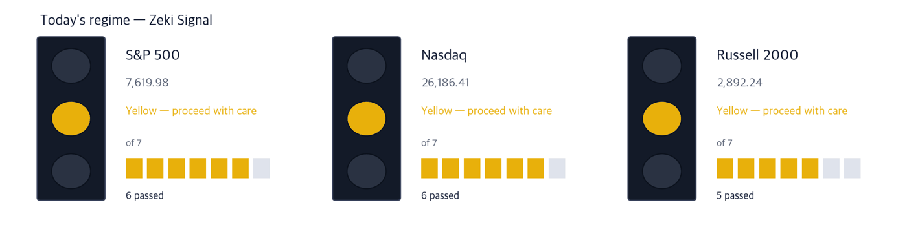
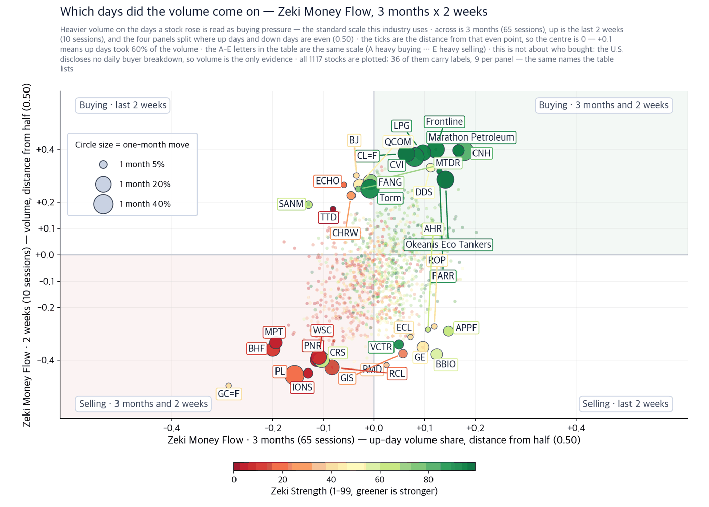
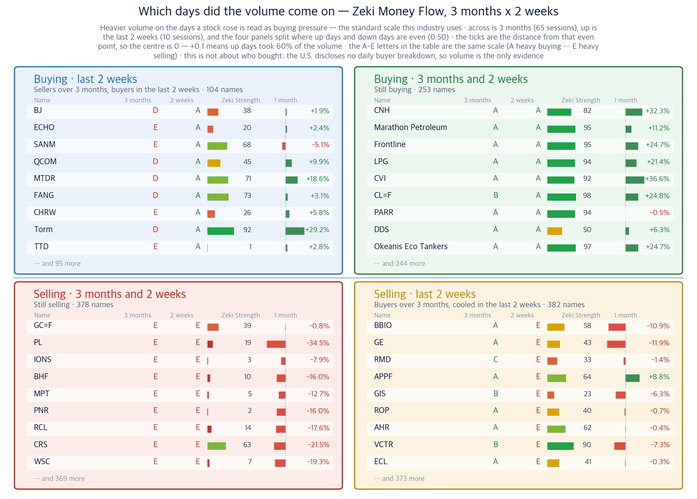
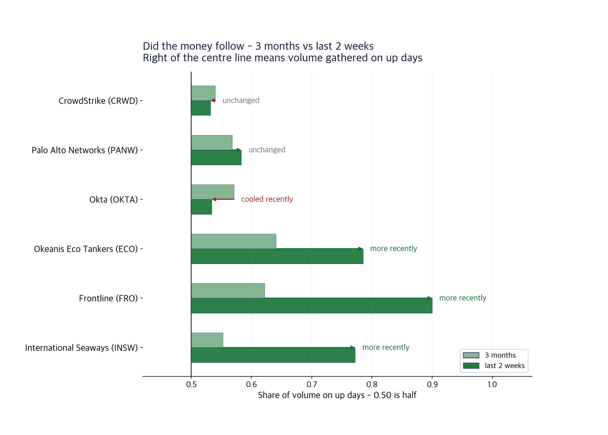

S&P 500 7,619.98 (-0.48%) | Nasdaq 26,186.41 (-0.56%) | Dow 52,421.20 (-0.29%) | US 10-year 4.96% | Zeki Signal Yellow |

| Lit lamp | Today's regime. Green means buyers have the edge, yellow means wait, red means no new buys. |
| Filled squares | How many of the 7 conditions passed. More filled means firmer market structure. |
| All filled but not green | Something else pulled the grade down one step. The reason is printed under the lamp. |
The Zeki Signal turns seven tests of the market into a single light. Green means conditions favour buying, yellow means wait, red means hold off on new buying. On 14 September the S&P 500 and the Nasdaq each passed six of the seven.
All three major indexes fell on 14 September. But the market did not fall as one.
The US 10-year Treasury yield crossed 5% during the session, the first time since 2007. Money left the companies that sell the AI build-out. Where it went was security software and crude tankers.
One force lifted both. Crude has less room to move through the Middle East, and the industry that builds AI has turned anxious about its own speed. Those same two facts are why the Federal Reserve is expected to raise rates on 16 September. (Wall Street Journal)
1. A call to slow AI down enlarged the security budget. Researchers named cybersecurity as their first worry. CrowdStrike rose 13.9% on 14 September and closed at a 52-week high.
2. A second sea lane for crude closed. When ships take the long way round, the same cargo takes longer and fewer vessels are available. All three tanker owners closed near 52-week highs.
3. Refiners fell the same day. Tanker owners are paid for the longer voyage; refiners must buy the crude. Valero fell 1.9% and Phillips 66 fell 0.9%.
| Date | What to watch | What it changes |
|---|---|---|
| Wed 16 Sept | Federal Open Market Committee rate decision | A 0.25 point increase is priced at 92%. A rise keeps the 10-year yield elevated |
| Wed 16 Sept | August retail sales | Consensus +0.7% after a 0.6% fall in July. A beat puts inflation back in front |
| Thu 17 Sept | August housing starts | Consensus 1.315 million, above July's 1.24 million |
| Fri 18 Sept | August leading indicators | Consensus +0.1% after +0.2% in July |
The people who build AI asked for the pace to slow. The heads of Anthropic, OpenAI, xAI and Google DeepMind said so on the same day.
The largest worry was that AI could break security itself. So security software led the market on 14 September. The suppliers were sold instead: Corning, Teradyne and Coherent each fell more than 12%.
Theme 1 · Security software
Sources: Wall Street Journal · Investor's Business Daily
In short Volume ran at 2.7 times the 50-day average into a 52-week high close. Confirming signal — Holding the 14 September close of $235.38 through this week, with one more day of volume above the 50-day average. Invalidation — A return below the 11 September close of $206.74 erases Monday's gain. |
Theme 1 · Security software
Source: Wall Street Journal
In short The one-day move matched CrowdStrike. Over a month it is still 5.6% lower. Confirming signal — Recovering the level of a month ago while holding the 14 September close of $373.94. Invalidation — A wider one-month loss would mark this as a single day's bounce. |
Theme 1 · Security software
Source: Investor's Business Daily
In short Up 20.3% over the month. But the flow of the last two weeks has cooled. Confirming signal — The two-week flow grade returning to A while it holds the 14 September close of $186.45. Invalidation — Losing the 14 September close would make the breakout a one-day event. |
What lifted the tankers is distance, not the oil price. A longer route means the same cargo takes more days at sea. That leaves fewer ships available and rates rise.
Refiners falling on the same day shows the difference. A tanker owner earns more as the route lengthens; a refiner simply pays more for the crude.
Theme 2 · Crude tankers
Sources: Wall Street Journal · Investor's Business Daily
In short Up 24.7% over the month. Flow increased over the last two weeks. Confirming signal — Finishing this week above the 14 September close of $79.72. Invalidation — News that the sea lane has reopened removes the premise for the rate. |
Theme 2 · Crude tankers
Sources: Wall Street Journal · Investor's Business Daily
In short The same one-month gain as Okeanis Eco Tankers. Confirming signal — Days of volume above the 50-day average continuing above the 14 September close of $50.52. Invalidation — Three consecutive closes below the 14 September close would mark the two-week flow as broken. |
Theme 2 · Crude tankers
Sources: Wall Street Journal · Investor's Business Daily
In short Up 16.9%, the most gradual of the three tanker owners. Confirming signal — The three-month flow grade rising to A while it holds the 14 September close of $105.84. Invalidation — Thinning volume below the 14 September close would mark it as a late follower. |
A convincing article is not enough if the price does not follow. Two themes were left out today.
| Theme left out | What the article said | What the figures show |
|---|---|---|
| Excluded The three largest cloud operators | Microsoft, Alphabet and Meta each rose more than 2% on 14 September | They rose for a day, but their Zeki Strength is 69, 60 and 49. These did not lead the last three months |
| Excluded Power generation | NextEra Energy held its 2026 profit guidance at the top of its range, and the Environmental Protection Agency said it would roll back power-plant carbon rules | NextEra Energy fell 0.8% on 14 September. Zeki Strength 34, and 15.4% below its 52-week high |
| Theme | Name | Zeki Strength | Weight of evidence |
|---|---|---|---|
| Theme 1 · Security software | CrowdStrike (CRWD) | 95 | Well grounded |
| Palo Alto Networks (PANW) | 94 | Grounded | |
| Okta (OKTA) | 96 | Grounded | |
| Theme 2 · Crude tankers | Okeanis Eco Tankers (ECO) | 97 | Well grounded |
| Frontline (FRO) | 95 | Well grounded | |
| International Seaways (INSW) | 96 | Well grounded |
| Name | ①up over the month | ②Strength 90+ | ③flow 3mo A or B | ④2wk not weaker | Met | Weight of evidence |
|---|---|---|---|---|---|---|
| CrowdStrike (CRWD) | O | O | O | O | 4/4 | Well grounded |
| Palo Alto Networks (PANW) | X | O | O | O | 3/4 | Grounded |
| Okta (OKTA) | O | O | O | X | 3/4 | Grounded |
| Okeanis Eco Tankers (ECO) | O | O | O | O | 4/4 | Well grounded |
| Frontline (FRO) | O | O | O | O | 4/4 | Well grounded |
| International Seaways (INSW) | O | O | O | O | 4/4 | Well grounded |
The United States publishes no daily record of which institutions bought. So we infer it from whether trading concentrated on up days — the standard accumulation and distribution measure. We measured 1,117 names at the 14 September close.

| One dot | One stock. Its position is simply its two values, and the horizontal and vertical rules through the middle are the centre line for each. The four corner labels say what each quadrant means. |
| Dot size | The last month's move, up or down. Bigger means it moved more. |
| Dot colour | Zeki Strength — greener is stronger. |
| Only 30 | Korean and ticker labels overlap beyond that. The names left out sit near the centre, where little moved. |

| Four panels | The two measures are each compared with a centre line. Top right cleared both, bottom left cleared neither, and the other two cleared one. Each panel's title is a plain sentence saying what that means. |
| The two middle columns | Where the two periods are compared. If they carry letters A-E, that is the standard scale this industry uses: A heavy buying, B buying, C an even split, D selling, E heavy selling (a rank of all names in fifths, so A is the top 20%). If they carry numbers, that is net buying over the period. |
| Nine per panel | The largest movers in that panel. The rest are counted at the foot of the panel. These same nine per panel are the names labelled on the scatter. |
| Month bar | Zero at the centre: right is up, left is down. Compare lengths within one panel only — each panel is scaled to itself. |
| Zeki Strength | A 1-99 rank. Longer and greener means the stock's price is stronger than the market. |
A story can be right and the price can rise while the flow says otherwise. The further a bar sits to the right, the more trading fell on up days.

| Two bars | The upper bar is three months, the lower the last two weeks - the same name over two windows. |
| Centre line | 0.50. To the right, volume gathered on up days; to the left, on down days. |
| Arrow | Points from three months to two weeks. Rightward means buying pressure rose recently; leftward means it cooled. |
| Text at the right | The same direction in words - 'more recently' means the buying is continuing. |
All three tanker owners took in more over the last two weeks. Among the security names Okta cooled instead. That is why its confirming signal is written on the flow grade.
| Weight of evidence | Names | Up | Down | Beat S&P 500 | Avg excess |
|---|---|---|---|---|---|
| No name has 5 trading days behind it yet. The 24 names run are on record and will be counted here as the days fill. | |||||
| When | What to watch |
|---|---|
| First 30 minutes | Whether the US 10-year Treasury yield climbs back above its 14 September close of 4.96% |
| Through the day | Today is the first day of the Federal Open Market Committee meeting, so there is no announcement. The decision comes on 16 September |
| Last 30 minutes | Whether the three security software names hold their volume into the close |
The rate decision and August retail sales both land on 16 September. Housing figures follow on 17 September and the leading indicators on 18 September.
| Term | What it means |
|---|---|
| Zeki Strength | Where a price ranks among the 1,146 US-listed names we follow, from 1 to 99 |
| Zeki Money | How far trading concentrated on up days, from 0 to 1. 0.50 is an even split |
| Zeki Signal | How many of seven market tests passed, turned into a single light |
| Weight of evidence | The label from counting four tests. All four met is Well grounded |